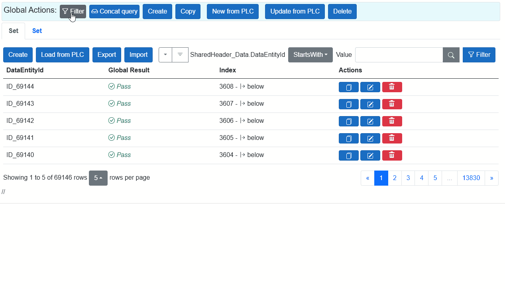

🔍 FILTER
Enables dynamic data filtering. Filter and sort operations can be configured dynamically based on members of PLAIN data objects across multiple repositories or exchanges.
To use filtering, the user must have the permission: can_data_filter_advanced.
The same filtering principle is used as described in the
Filter documentation.

🔗 Concat Query
As shown in the image above, after applying a filter, the Concat Query option is automatically enabled.
Once a filter is applied, a target repository is selected, and all related DataEntityIds matching the filter are retrieved.
The next step is to intersect these results across the fragments. The outcome is a list of EntityIds that must be transmitted between the fragment views.
If you apply an additional filter within a specific fragment, the injected EntityIds will be intersected again with the previous result — refining the dataset further.